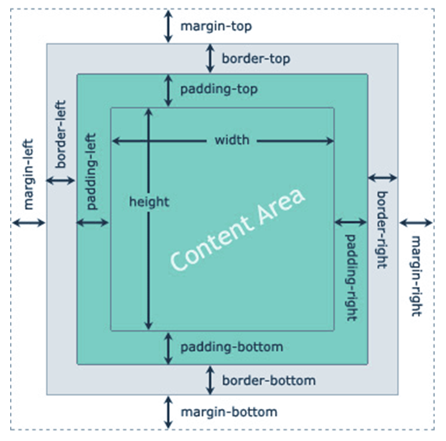
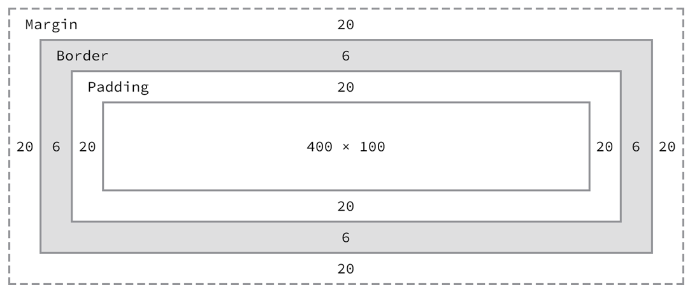

margin: 30px;
margin-top: 50px;
margin-left: 40px;
margin-right: 40px;
margin-bottom: 20px;
margin: 50px 40px 20px 50px;
This area consists of space between border and margin.
padding: 20px;
padding-top: 10px;
padding-right: 50px;
padding-bottom: 50px;
padding-left: 20px;
padding: 10px 50px 50px 20px;
This area is actually the space around the content area and within the border-box.
Every element that can be displayed on a web page is comprised of one or more rectangular boxes. CSS box model typically describes how these rectangular boxes are laid out on a web page. These boxes can have different properties and can interact with each other in different ways, but every box has a content area and optional surrounding padding, border, and margin areas.
The following diagram demonstrates how the width, height, padding, border, and margin CSS properties determine how much space an element can take on a web page.

Total Width = margin-right + border-right + padding-right + width + padding-left + border-left + margin-left
Total Height = margin-top + border-top + padding-top + height + padding-bottom + border-bottom + margin-bottom
